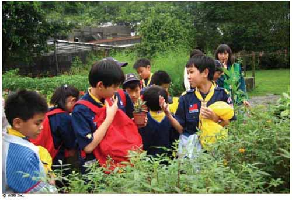

Sentidos en la Naturaleza


Finalidad 2
Los scouts trabajan por un mundo en el que existen hábitat naturales suficientes para mantener a las especies locales.
Objetivos educativos: Explorar un área natural.Comprender las conexiones en el ecosistema, de las especies locales de plantas y animales; y sus necesidades de hábitat.
Demostrar conocimiento de algunos hábitats naturales contrastantes.
Edad: Menores de 11 años
Resumen: Una actividad al aire libre en la que los scouts usan sus cinco sentidos para explorar y conectarse con la naturaleza.
Objetivo: Experimentar y conectarse con la naturaleza usando todos los sentidos (viendo, oyendo, probando, oliendo, tocando) y comprender cómo la información de nuestros sentidos se combina crear nuestra consciencia del mundo natural.
Materiales y equipo: Vendas para los ojos, papel, lápices.
Preparación: Encontrar un lugar apropiado para visitar.
Duración: Una hora
Lugar: Un área natural local, por ejemplo, bosque o monte, playa, montaña o parque.
Antecedentes: La naturaleza puede ser apreciada usando todos nuestros sentidos.
El sentido que más a menudo usamos para comprender nuestro ambiente es la vista, pero en realidad, al mismo tiempo usamos nuestros otros sentidos para construir la imagen de lo que nos rodea.
Al concentrarnos en cada uno de nuestros sentidos individualmente, podemos obtener una mejor conciencia de nuestro medio ambiente local.
Guía paso a paso de la actividad
1. Encontrar un área natural local para llevar al grupo.2. Pedirle al grupo nombrar los cinco sentidos y discutir cómo los usamos en la vida cotidiana. ¿Cómo nos ayudan nuestros sentidos a entender lo que nos rodea?
3. Explicar al grupo, que van a explorar el ambiente natural a su alrededor usando cada uno de los cinco sentidos individualmente. ¿Qué sentidos usan más? ¿Cuáles sentidos creen ellos que les pueden decir más y cuáles les pueden decir menos?
4. Hacer las siguientes actividades. Cada actividad identificará diferentes características del ambiente natural que están explorando. Anote estas características a medida que progresa la actividad. La actividad final termina al resumir cómo nuestros sentidos nos han proporcionado una imagen del ambiente local.
Actividad 1 - Cacería Basurera
Sentido: Vista
1. Divida a los Scouts en equipos y pídales buscar diez objetos que tengan algo en común. Por ejemplo, diez objetos naturales que sean blandos. Otras ideas: objetos que sean duros, verdes, marrones, sin vida, hechos por el hombre, etc.
2. Cada grupo podría tener la misma categoría o un grupo podría tener que buscar objetos blandos y el otro grupo objetos duros.
3. Los Scouts deben tener cuidado de no lastimar o molestar a los seres vivientes.
4. Una vez que han encontrado los objetos, se los presentan al resto del grupo.
5. Propicie una discusión sobre lo que han encontrado. Algunas ideas de preguntas se muestran adelante.
6. Después de la discusión, devolver los objetos a sus sitios y de manera apropiada. Si un grupo ha recolectado objetos hechos por el hombre, asegúrese que sean retirados y desechados correctamente.
¿Cuántos objetos diferentes han encontrado en total? ¿Están sorprendidos los grupos por el número de distintos objetos que han encontrado?
¿Cuál es el objeto más sorprendente que han encontrado? ¿Cuánto material hecho por el hombre han encontrado? ¿En dónde buscaron los objetos?
¿Qué tan bien representan estos objetos a lo que están viviendo en este ambiente? ¿Fue ésta una actividad fácil?
Dependió de nuestro sentido de la vista. ¿Cuán útil es nuestra vista? ¿Cuál es la importancia de la vista para la conciencia y compresión de la naturaleza?
Actividad 2 - Caminar descalzos
Sentido: Tacto
1. Divida el grupo en parejas y elija a uno de cada pareja para ir primero.
2. Los Scout que van primero se quitan los zapatos y medias, y se vendan los ojos.
3. Los Scout con los ojos vendados son dirigido por sus respectivos compañero.
4. Al caminar, los Scouts con los ojos vendados deben concentrarse en lo que pueden sentir con sus pies. Deben describirle a su compañero cómo se siente el suelo en sus pies y tratar de identificar sobre qué están caminando. El camino debe ser seguro y libre de objetos afilados o peligrosos y debe incluir diferentes texturas y superficies.
5. Las parejas entonces, cambian los papeles y repiten la actividad.
6. Reúna al grupo y discuta la actividad.
Algunas ideas para la discusión pueden ser: ¿Cómo se sentía el suelo? ¿Era blando, duro, tibio, frío, húmedo, seco, etc.?
Trate de pensar en palabras bastante imaginativas para describir el suelo.
¿Sobre qué estaban caminando? ¿Qué tan sensibles son sus pies? ¿Son más, igual, o menos sensibles que sus manos? ¿Usaron su sentido de la audición para ayudar a identificar sobre qué estaban caminando? (por ejemplo, si caminaron a través de hojas, barro o agua) ¿Cómo les hizo sentir el estar con los ojos vendados?
Actividad 3 - Encuentra tu árbol
Sentido: Tacto
1. Presentar la actividad con la observación de los árboles que les rodean. Preguntar a los Scouts cuáles son las características distintivas de los árboles y visitar varios árboles para ver sus diferencias y similitudes.
2. Dividir al grupo en parejas y vendar los ojos de un miembro de cada pareja.
3. Al Scout con los ojos vendados se le hace dar vueltas y luego se le guía cuidadosamente a un árbol. Esto es mejor hacerlo en silcencio.
4. Deben tocar al árbol para descubrir su tamaño, forma y textura. Necesitan aprender suficiente sobre el árbol para ser capaces de identificarlo sin sus ojos vendados. Buenas cosas qué sentir son los distintos patrones en la corteza, ramas que salen del tronco, raíces o plantas en la base del árbol. Una excelente manera de identificar su árbol es saber su diámetro. Haga que los Scouts abracen sus árboles para que esto funcione.
5. Entonces, se les conduce lejos del árbol, se les hace dar vueltas de nuevo y se le quita las vendas. Deben recordar cómo se sentía el árbol para encontrarlo.
6. Cada pareja cambia roles y repite la actividad.
7. Reúna al grupo y discuta la actividad.
Algunas ideas de preguntas pueden ser: ¿Fue fácil encontrar sus árboles? ¿Qué características del árbol les ayudaron a encontrarlo? ¿Al tocar los árboles, fue fácil imaginar cómo se veían? ¿Qué tan sensibles sus dedos? ¿Qué características del árbol pudieron sentir (por ejemplo, deferentes texturas, diferentes temperaturas, humedad, resequedad)? Si han hecho una actividad descalzos, ¿son sus dedos más sensibles que sus pies? ¿Cómo se compara tocar al árbol, con sólo mirarlo? ¿Qué aprendieron del árbol al tocarlo, que no aprendieron cuando sólo lo miraron?
Actividad 4 - ¿Qué oyes?
Sentido: Oído
1. Pídale a cada Scout encontrar un sitio cómodo para sentarse.
2. El grupo debe sentarse y guardar silencio por cinco minutos y escuchar los sonidos a su alrededor. Cuando oigan un sonido, deben pensar en qué lo hizo y recordarlo.
3. Al transcurrir cinco minutos pregunte al grupo lo que oyeron y discutan los sonidos.
Algunas ideas de preguntas pueden ser: ¿Qué sonidos lograron escuchar? ¿Fueron sonidos naturales o hechos por el hombre? ¿Les sorprendió tanto (o tan poco) sonido que hay?
¿Escucharon sonidos que nunca habían escuchado antes, si es así, cuáles? ¿De qué manera les ayudaron los sonidos que oyeron a comprender lo que les rodea?.
Actividad 5 - Olores de la Naturaleza
Sentido: Olfato
1. Siente al grupo y pídales cerrar sus ojos y guardar silencio por unos minutos, y concentrarse en lo que pueden oler a su alrededor.
2. Después de unos minutes propicie una discusión sobre los olores a su alrededor. Los resultados de esta discusión dependen mucho del área natural, época del año, el clima, e incluso la hora del día. Pídale a los Scouts identificar cualquier olor. ¿De dónde vienen estos. ¿Les gustan esos olores? ¿Cómo les hacen sentir esos olores?
3. Pídale a los Scouts explorar el área y oler tantas cosas naturales como les sea posible para encontrar su olor favorito. Explíqueles que pueden frotar las cosas con sus dedos para generar un olor. Así, el olor podría impregnarse en sus dedos.
4. Una vez que hayan encontrado su olor favorito, pida a cada Scout presentar su objeto con su olor respectivo al resto del grupo. Propicie una discusión sobre los olores naturales.
Algunas ideas de preguntas pueden ser: ¿Puede describir por qué le gusta su olor favorito? ¿Les recuerda a algo dicho olor? ¿Encontraron algún olor que no les gustara? ¿Fueron los olores de ese lugar natural lo que esperaban? ¿Tiene la naturaleza su propio olor? ¿Cómo creen que usan los animales que viven ahí, los olores que les rodean? ¿Si no pudieran ver, cómo les ayudaría su sentido del olfato para imaginar lo que les rodea?
Actividad 6 - Despensa de la Naturaleza
Sentido: Gusto
1. Reserve esta actividad para el final.
2. Pida al grupo nombrar todas las diferentes cosas que componen el ambiente natural a su alrededor. ¿Cuáles de estas cosas son comestibles? ¿Cómo serían los diferentes sabores? ¿Qué sabor tiene algo que es malo para nosotros? ¿Qué otros sentidos se pueden usar para ayudar a
decidir no comer algo?
3. Si hay plantas comestibles en el ambiente local que puedan ser arrancadas sin dañar el ecosistema local, entonces permita que los Scouts las prueben.
4. Pida a los Scouts que elijan una animal que viva en el ambiente local. Deben decirle al resto del grupo lo que ese animal come.
¿Creen ellos que los animales tengan papilas gustativas? ¿Cómo usan los animales su sentido del gusto? ¿Cómo decide un animal qué es bueno y qué es malo para comer?
Evaluación
1. Reúna al grupo y discuta sus experiencias al explorar la naturaleza usando cada uno de sus sentidos.
Algunas ideas de preguntas pueden ser: ¿Qué sentidos les dan más información acerca de lo que los rodea? ¿Qué sentidos les dicen menos? ¿De qué manera trabajan juntos los sentidos para darles información? ¿Qué cosas naturales han descubierto hoy? ¿Cómo usan sus sentidos los seres vivientes que existen en este ambiente? ¿Cuál es su cosa favorita en este ambiente?
Actividades avanzadas
1. Crear un afiche o imagen que muestre las diferentes características de su ambiente local
2. Aprender la diferencia entre especies nativas y foráneas y averiguar sobre ellos en su área local.
3. Explorar diferentes hábitats naturales en su área local y otros lugares, sobre ellos de los expertos, libros, filmes o la Internet.
4. Motive a los Scouts a practicar sus destrezas sensoriales simultáneamente por sí mismos en su tiempo libre.
5. Motive a los Scouts a mantener su propio diario de naturaleza en el que puedan registrar sus observaciones con diferentes sentidos.
© World Scout Bureau
Rue du Pré-Jérôme 5
PO Box 91
1211 Geneva 4 Plainpalais
Switzerland
Tel.: (+ 41 22) 705 10 10
Fax: (+ 41 22) 705 10 20
worldbureau@scout.org
scout.org
Reproduction is authorized to National Scout
Organizations and Associations which are
members of the World Organization of the Scout
Rue du Pré-Jérôme 5
PO Box 91
1211 Geneva 4 Plainpalais
Switzerland
Tel.: (+ 41 22) 705 10 10
Fax: (+ 41 22) 705 10 20
worldbureau@scout.org
scout.org
Reproduction is authorized to National Scout
Organizations and Associations which are
members of the World Organization of the Scout